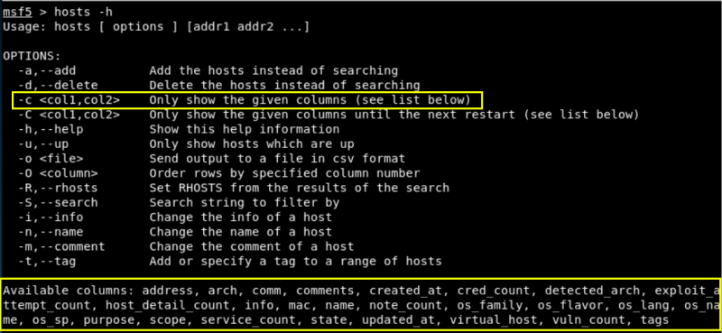

2.1 Nmap within Metasploit
Metasploit does support different types of port scans from within the auxiliary modules. Metasploit can also import other scans from nmap and Nessus just to name a few.
Before working with these commands you have to initialize the database. (See previous step),
1. Run nmap within Metasploit.
One of the beauties of having a database connected to Metasploit is the ability to save our results in the database for later use.
You can use db_nmap command with all the parameters of nmap.
msf5 >db_nmap -A <IP>
2. Hosts.
After the db_nmap has completed its work, it saves the IP addresses and info into the connected database. We can view that information with the hosts command.
2.1. Help screen.
msf5 >hosts -h

As you can see above, the hosts command takes multiple options. For our purposes here, the most important is -c for columns. This switch enables us to select the columns or fields of data we what to display with the hosts command (similar to the SELECT command in SQL). At the bottom of the screenshot above, you can see displayed the available columns.
2.2. See some columns.
Let's say we want to see the IP address, the MAC address, the operating system and the purpose of the systems we have in our database.
msf5 >hosts -c address,mac,os_name,purpose
2.3 Services.
Tto see the services running on our target system(s),
msf5 > services
2.4 Vulns.
Metasploit will keep track of discovered vulnerabilities. One of the many ways the database can be leveraged quickly and powerfully.
msf5 > vulns